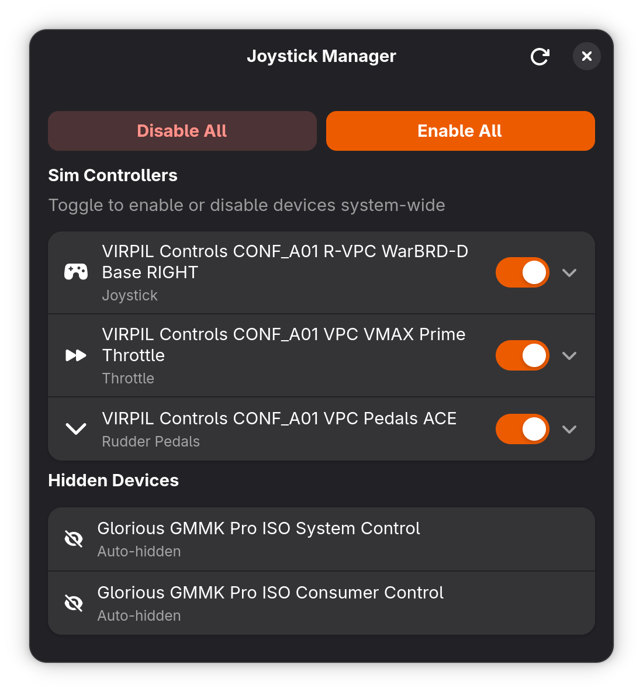

Enable or disable your HOTAS without unplugging — for sim pilots on Linux.

Toggles devices at the kernel level via /sys/bus/usb. Works on Wayland and X11 — below the display server.
Your last-known device state is restored at boot via a systemd service. Disabled controllers stay disabled across reboots.
Auto-detects joysticks, throttles, rudder pedals, and gamepads by name. Hides keyboards and media keys automatically.
Compact dark interface with per-device toggles, hide/unhide, Enable All / Disable All. Built with GPUI (Zed's engine).
Privilege escalation via polkit — the same mechanism your desktop uses for software installation. Never runs as root itself.
Available on AUR for Arch users. .deb and .rpm packages for Ubuntu, Debian, and Fedora.
# Install from AUR (recommended) yay -S joytoggle # Or build manually git clone https://github.com/Mirkko/joytoggle.git cd joytoggle && ./install.sh
# Download the latest .deb from GitHub Releases wget https://github.com/Mirkko/joytoggle/releases/latest/download/joytoggle_amd64.deb # Install daemon + app sudo dpkg -i joytoggle_amd64.deb # Or build from source (requires Ubuntu 22.04+) git clone https://github.com/Mirkko/joytoggle.git cd joytoggle && ./install.sh
# Download the latest .rpm from GitHub Releases wget https://github.com/Mirkko/joytoggle/releases/latest/download/joytoggle.x86_64.rpm sudo rpm -i joytoggle.x86_64.rpm # Or build from source git clone https://github.com/Mirkko/joytoggle.git cd joytoggle && ./install.sh